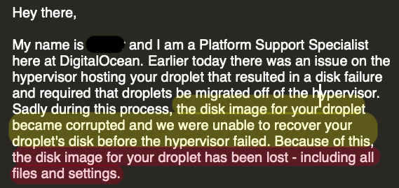

But wait for the real deal
Good morning everyone, thank you all for comming. I am here today to talk to you about workflow in which you can easily share your analysis while making it reproducible. In the following slides I will be focusing of my talk will be focusing on shareability and reproducibility
Professionally, I work as a Planning & Performance Management Analyst at Saudi Aramco. Outside working hours, I am a data science enthusiast and blogger, so if you recognize me it is probably from twitter because I am very active there or maybe you have read one of my blogs on ArabianAnalyst.com.
Before we talk about analysis shareability and reproducibility , I want to share with you a personal story that motivated this talk and the workflow I adopted.
I am very passionate about data science so I started writing blogs since 2016. I mainly talked about data wrangling and data acquisition and basicaly share everything new I learn about this field. What I found that technical blogging is different than blogging about any other topics.
because you usually start with the code and explore many options and try different approaches until you are satisfied with the results then you try to communicate your result in cohesive narrative that is now lost because so many missing interlinked thoughts you had during coding session that you did not document or capture right away.
plus now you have to worry about how the final article or presenation is going to look like and you have to export all the figures and charts your code created and uploade them in specific order along with text.
so I adopted this not so organized workflow for almost a year and half until this happen

so basically all the blogs I have written for the past year and I half were gone.
So I decided to look back at my code on my machine re-do everything from scratch again. but to my surprise the most if not all of my codes did not work this is because most of the packages I have used at the time has been updated. That made my analysis almost impossible to reproduce.
In designing the work flow I put number of criteria to meet
Reproducible: Clear instructions & analysis & Calculations Availability of Data Shareable : flexibility to convert analysis to any format (pdf, html, presentation, LaTex) Reliable : I want to share my work on a reliable server so I don’t lose everything overnight. I also needed and easy way to have a complete backup Collaborative : any one should be able to contribute and improve upon the work. I also
There are a lot of solutions commercial and non-commercial to achieve this fore example
In the following slides we will try to proceed a process that enables you to